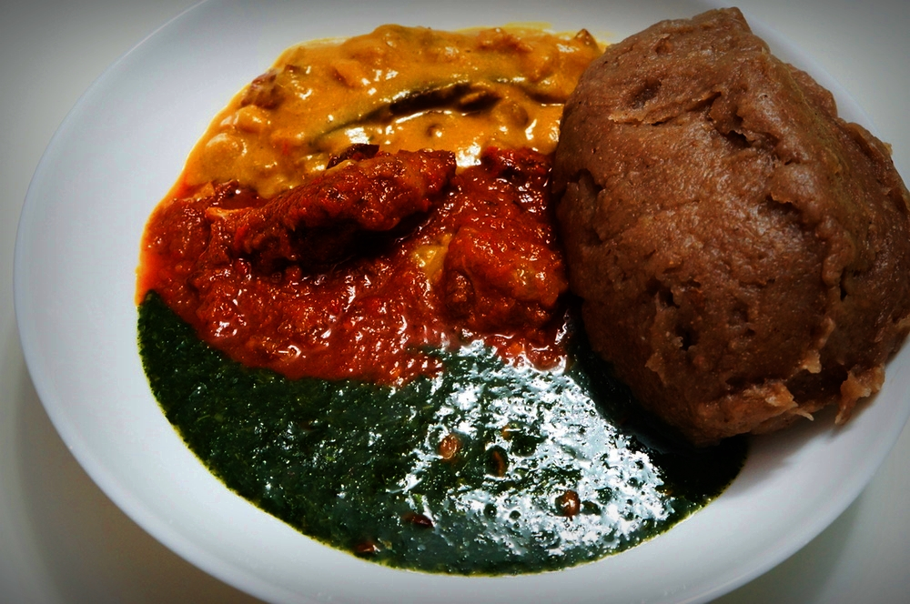

Amala

Description
This a food local to most West Africans, especially people from the Yoruba ethnic group from the south-western Nigeria.
Ingredients
- Yam(elubo) or cassava(lafun) flour.
- Hot Water: The quantity of water depends on the quantity of amala you wish to make.
Steps
- Boil water in electric kettle and measure 4 Cups into pot.
- Cover the pot and leave water to boil
- Lower heat then add in the yam flourinto water at a go then stir with turning spoon till it comes together.
- Add in the reserved cup of water, cover and leave to steam for 1-2 minutes.
- Stir amala till it's smooth and fluffy.
This can then be served with your faviourite soup which could be ewdu, gbegiri, ogbono or okra.